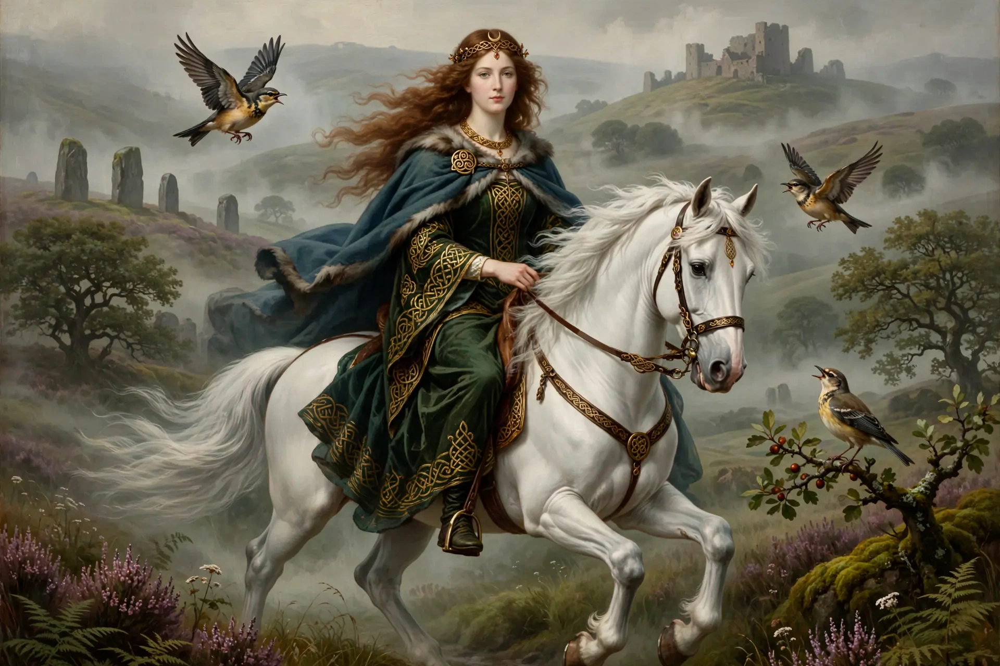

Rhiannon is a major figure in Welsh mythology, appearing in the First and Third Branches of the Mabinogi. A beautiful, otherworldly woman associated with horses and birds, she is widely regarded as deriving from a Celtic goddess — her name likely means “great queen” (from *Rīgantonā).

Pwyll, prince of Dyfed, first sees Rhiannon riding a magnificent white horse that, though apparently ambling, cannot be overtaken until Pwyll calls out to her. She chooses him over her betrothed, Gwawl, and engineers Gwawl's humiliation in a magical bag. Their son disappears on the night of his birth; Rhiannon, falsely accused by her attendants of devouring the child, does penance carrying visitors to the court on her back like a horse. The boy, rescued by Teyrnon, is restored and named Pryderi.
Widowed, Rhiannon marries Manawydan fab Llŷr. When a magical mist empties Dyfed, she and Pryderi are trapped in an enchanted fortress and she is imprisoned in animal form; both are freed when Manawydan breaks the spell, which was revenge for Gwawl's humiliation.
Scholars link Rhiannon to the Gaulish horse goddess Epona and to sovereignty goddesses who confer kingship. Her birds, whose song could wake the dead and lull the living to sleep, appear in Culhwch and Olwen. She inspired Fleetwood Mac's 1975 hit song “Rhiannon” by Stevie Nicks.
Recreated from memory.